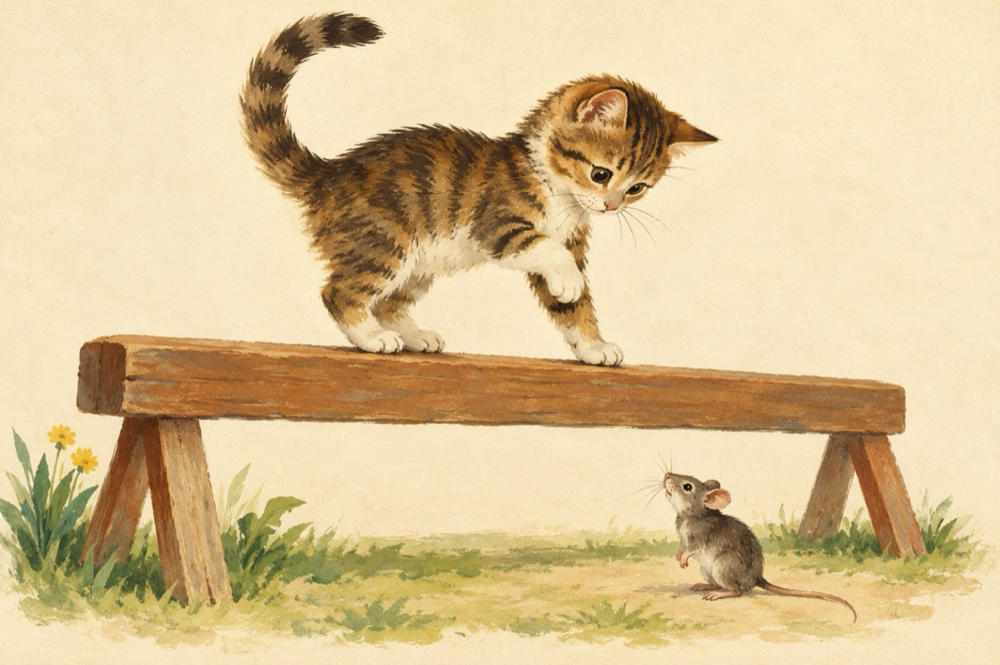

Campioana
Pe mișcări eu sunt stăpână
Și pas cu pas tot chibzuiesc
Vreau campioană să fiu la bârnă
Și sunt atentă să nu greșesc
Tot neamul nostru pisicesc
Cu ochii sunt pe mine
Și eu nu vreau să dezamăgesc
Priviți cât fac de bine
La sol însă un șoricel a apărut
Care pe loc m-a derutat
Și neatentă am căzut
Și astfel totul am ratat!
Păcat...!
Vasile Groza